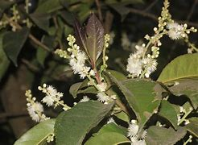

Latthe Education Society's Acharya Deshabhushan Ayurvedic Medical College And Hospital Bedkihal-Shamanewadi, 591214
Department of Dravyaguna Vigyana

Basonym of Drug
Lodhra
Main Synonym
Tilva
Tirita
Shavar
Galav
Kramuka
Sthulavalka
Jirnapatra
Bruhat Patra
Patti
Prasadana
Regional Name
Gujarati: Lodhar
Hindi: Lodh
Marathi: Lodh
Telugu: Lodhaduchettu
Kannada: Lodhra
English: Symplocos Bark
Botanical Name
Symplocos racemosa
Types
Shavar Lodhra - Symplocos racemosa
Pathani Lodhra - Symplocos crataegoides
Family
Symplocaceae
Classification (Gana)
Aacharya Charaka: Sandhaniya, Sonitasthapana, Purishsangrahaniya Mahakashaya, Kashaya Skandha
Aacharya Sushruta: Lodhradi, Nyagrodhadi Gana
Aacharya Vagbhata: Rodhradi, Nyagrodhadi Gana
External Morphology
5-6 meter high tree
Useful Parts
Stem Bark
Flower
Important Phytoconstituent
Epifzelechine
Colloturine
Loturidine
Loturine
Symposide
Rasa Panchak
Rasa: Tikta, Kashaya
Guna: Laghu, Ruksha
Virya: Shita
Vipaka: Katu
Action
Kaphapittahara
Therapeutic Indication
Grahi (reduce excessive secretion)
Chakshusya (good for eyes)
Kandughna (treat pruritus)
Kusthaghna (useful in skin disorders)
Deepan (appetizer)
Vranaropaka (wound healer)
Therapeutic Uses
Rakta Pradara - Bark powder with sugar is beneficial in metrorrhagia.
Atisara - In diarrhea, bark powder with buttermilk is useful.
Akshi Sotha - Bark powder of Lodhra with licorice root powder is applied externally to the eyes in inflammation.
Dose
Bark Powder: 3-5 gm
Decoction: 50-100 ml
Formulations
Rodhrasava
Lodhradi Kashaya
Nyagrodhadi Churna
Nyagrodhadi Kwath
Adverse Effect
Not Known